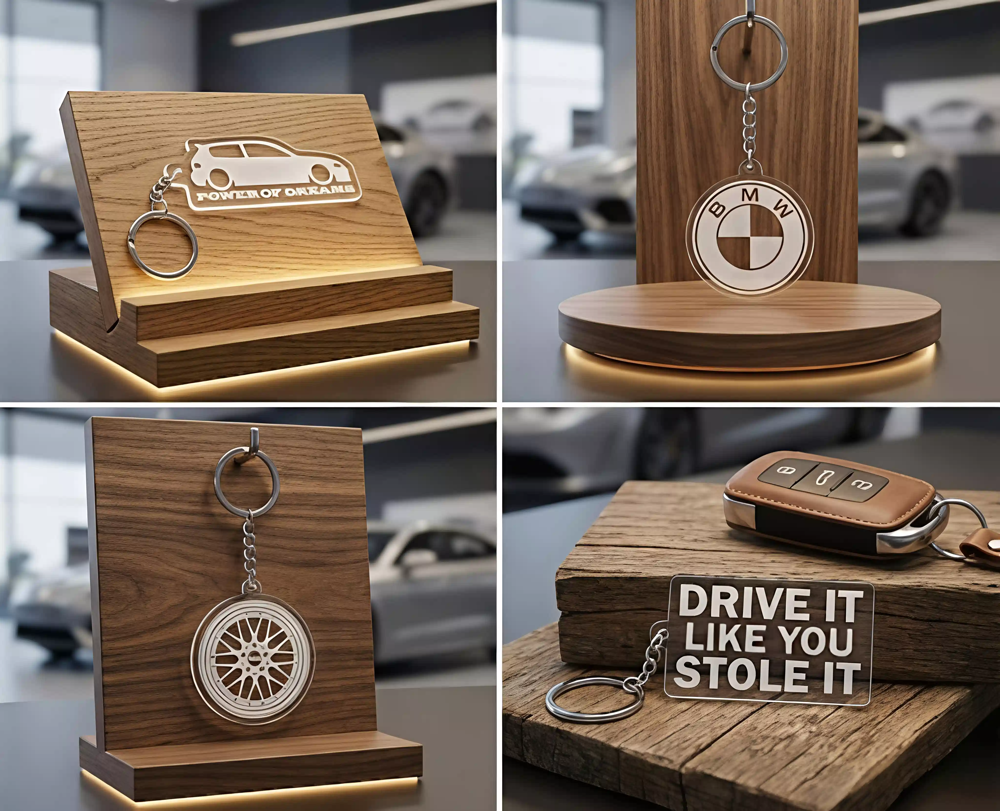

Porta-chaves Personalizados de Carros e Motos em Acrílico
Criamos o teu porta-chaves com o perfil exato do teu carro, logótipos ou matrículas. Acrílico premium e detalhe de corrida.
Envie o teu pedido de orçamento via WhatsApp!
Contornos perfeitos e detalhados. Fazemos o formato exato do teu projeto, garantindo máxima fidelidade.
Acrílico cristalino de alta resistência com gravação fosca elegante.
Do modelo do teu carro a logótipos de clubes ou matrículas.